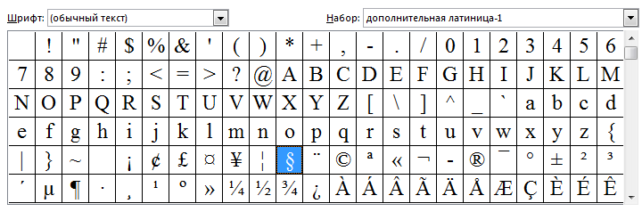
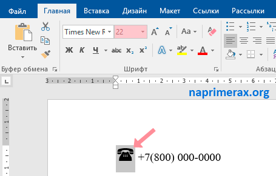
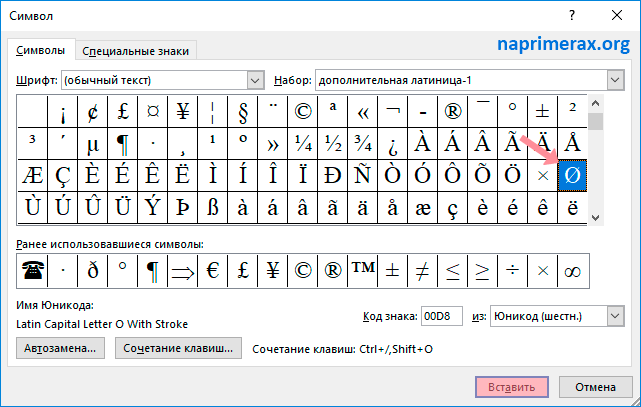

Символы в Microsoft Word
В этой статье мы обсудим использование специальных символов в Word. Если вам необходимо вставить символ в ворде, которого нет на клавиатуре, например, символ галочки, градуса, диаметра или телефона, в MS Word есть специальный инструмент, с помощью которого вы можете вставить математические символы, обозначения денежных единиц, символы авторского права, товарного знака и множество других символов.
Далее будет рассмотрено несколько способов, как вставить символ в ворде. Первый способ будет удобен для вставки символов, которые редко используются. А вот если вы часто используете определенный символ, вы можете назначить ему сочетание клавиш. О том, как вставить символ в ворде используя сочетание клавиш, рассмотрим во втором способе.
Как вставить символ в Word
Для вставки символа в ворде,
1. Установите курсор, где вы хотите вставить символ.
2. Перейдите на вкладку «Вставка». В группе «Символы» нажмите кнопку «Символ».
3. После того как вы нажмете кнопку «Символ», появится небольшой список символов, как показано ниже.
4. Теперь щелкните по любому из доступных символов в поле, чтобы вставить его в свой документ в выбранном месте. Если необходимого символа в этом маленьком поле нет, нажмите кнопку «Другие символы…».
5. В диалоговом окне «Символ» представлен широкий диапазон символов. Вы можете выбрать любой символ, а затем нажать кнопку «Вставить», чтобы вставить выбранный символ в ворде.
Рассмотрим несколько примеров, как вставить символ в ворде.
Как вставить символ телефона в ворде
1. Для того чтобы вставить символ телефона в ворде, установите курсор в необходимое место и откройте диалоговое окно «Символ», описанным выше способом.
2. На вкладке «Символы» в поле «Шрифт» в выпадающем меню выберите из списка шрифт «Windings».
3. Выберите понравившийся вам символ телефона, нажмите кнопку «Вставить», а потом закройте окно.
4. Символ телефона появиться в тексте. Если символ будет слишком маленьким просто выделите его и увеличьте шрифт.
Как вставить символ градуса Цельсия в ворде
Для того чтобы поставить символ градуса Цельсия, в диалоговом окне «Символ» в поле набор выберите из списка пункт «дополнительная латиница»:
Теперь выберите символ градуса Цельсия и нажмите «Вставить».

Как вставить символ диаметра
Для того чтобы вставить символ диаметра, в поле набор выберите «дополнительная латиница-1»:
Выделить символ диаметра и нажмите кнопку «Вставить».
Назначить сочетание клавиш для вставки символа
Вы можете назначить комбинацию клавиш для ввода любого из доступных символов. На примере разберем, как назначить сочетание клавиш Ctrl+Q для вставки символа ©.
1. Предположим, что у вас уже открыто диалоговое окно «Символ». Щелкните символ, для которого требуется назначить комбинацию клавиш и нажмите кнопку «Сочетание клавиш…».
2. В диалоговом окне «Настройка клавиатуры» в поле «Новое сочетание клавиш:» введите Ctrl+Q и нажмите кнопку «Назначить».
3. Выбранное сочетание будет добавлено в список текущих сочетаний.
4. Нажмите кнопку «Закрыть».
5. Теперь попробуйте набрать Ctrl+Q с помощью клавиатуры, и вы обнаружите, что можете ввести символ © без перехода в диалоговое окно с символами.